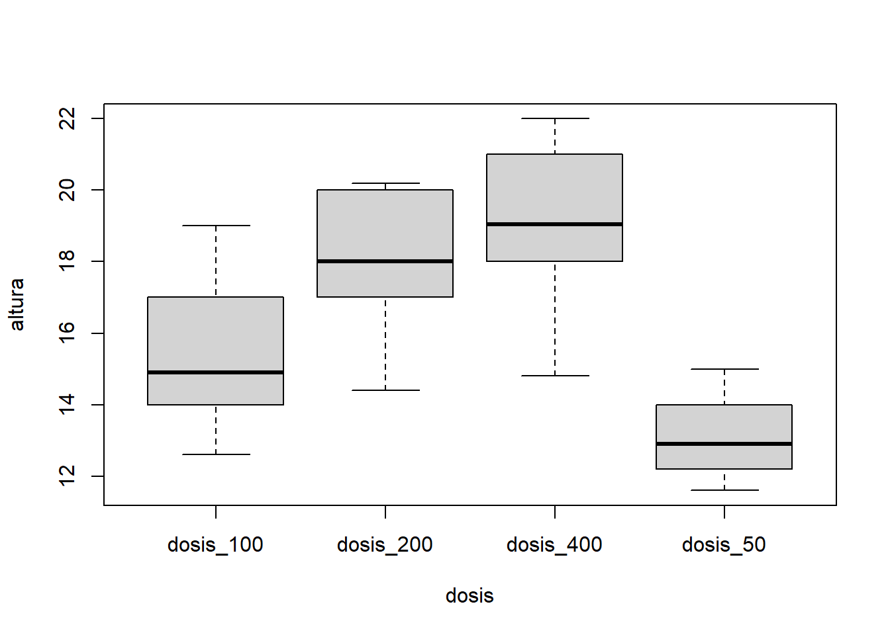

- Prefacio
- 1 El software
- 2 Tipos de datos y objetos en R
- 3 Lectura de archivos
- 4 Análisis exploratorio de datos
- 5 Análisis descriptivo para variables correlacionadas
- 6 Intervalos de confianza
- 7 Intervalo de confianza y prueba de hipótesis para comparar dos medias
- 8 Análisis de varianza en una clasificación
- References
Capítulo 8 Análisis de varianza en una clasificación
Para comparar las medias de más de dos grupos, podemos utilizar un ANOVA (Analysis of variance). El ANOVA compara las medias de tres o más grupos para determinar si al menos uno de los grupos es significativamente diferente de los demás. Si el ANOVA muestra diferencias significativas, se pueden realizar pruebas post hoc, como la prueba de Tukey, para identificar qué grupos específicos son diferentes entre sí.
En el siguiente ejemplo se ilustra el uso de un ANOVA en una clasificación, el cual se utiliza para comparar las medias cuando solo se tiene un factor o variable independiente.
Por ejemplo, supongamos que se desea evaluar si la dosis suministrada de un tratamiento produce cambios significativos en el crecimiento de cierta clase de planta, y se cuenta con los siguientes registros, que se asumen independientes:
altura <- c(12.4, 12.8, 12.2, 13, 14, 14.2, 11.6, 15, 12, 13.2,
16, 12.6, 14.8, 13, 14, 15, 14, 17, 18, 19, 17.8, 14.4,
20, 15.8, 17.0, 20.0, 19.6, 18.0, 20.2, 18.0, 21, 14.8,
19.1, 15.8, 18, 20, 21.1, 22, 19, 18.2)
dosis <- c(rep("dosis_50", 10), rep("dosis_100", 10),
rep("dosis_200", 10), rep("dosis_400", 10))
rendimiento = data.frame(altura, dosis)
rendimiento## altura dosis
## 1 12.4 dosis_50
## 2 12.8 dosis_50
## 3 12.2 dosis_50
## 4 13.0 dosis_50
## 5 14.0 dosis_50
## 6 14.2 dosis_50
## 7 11.6 dosis_50
## 8 15.0 dosis_50
## 9 12.0 dosis_50
## 10 13.2 dosis_50
## 11 16.0 dosis_100
## 12 12.6 dosis_100
## 13 14.8 dosis_100
## 14 13.0 dosis_100
## 15 14.0 dosis_100
## 16 15.0 dosis_100
## 17 14.0 dosis_100
## 18 17.0 dosis_100
## 19 18.0 dosis_100
## 20 19.0 dosis_100
## 21 17.8 dosis_200
## 22 14.4 dosis_200
## 23 20.0 dosis_200
## 24 15.8 dosis_200
## 25 17.0 dosis_200
## 26 20.0 dosis_200
## 27 19.6 dosis_200
## 28 18.0 dosis_200
## 29 20.2 dosis_200
## 30 18.0 dosis_200
## 31 21.0 dosis_400
## 32 14.8 dosis_400
## 33 19.1 dosis_400
## 34 15.8 dosis_400
## 35 18.0 dosis_400
## 36 20.0 dosis_400
## 37 21.1 dosis_400
## 38 22.0 dosis_400
## 39 19.0 dosis_400
## 40 18.2 dosis_400Podemos explorar el comportamiento de la variable altura,
## Min. 1st Qu. Median Mean 3rd Qu. Max.
## 11.60 14.00 15.90 16.34 19.00 22.00y comparar el comportamiento por grupos,
## Min. 1st Qu. Median Mean 3rd Qu. Max.
## 12.60 14.00 14.90 15.34 16.75 19.00## Min. 1st Qu. Median Mean 3rd Qu. Max.
## 11.60 12.25 12.90 13.04 13.80 15.00## Min. 1st Qu. Median Mean 3rd Qu. Max.
## 14.40 17.20 18.00 18.08 19.90 20.20## Min. 1st Qu. Median Mean 3rd Qu. Max.
## 14.80 18.05 19.05 18.90 20.75 22.00Además, podemos resumir la información, representada gráficamente por grupos como sigue,

Para evaluar si las varianzas de los distintos grupos son homogéneas, podemos aplicar la prueba de homogeneidad de varianzas de Bartlett, con la siguiente hipótesis nula \(H_0\) e hipótesis alternativa \(H_1\):
\[ \begin{matrix} H_0:\sigma_1^2=...=\sigma_k^2\\ H_1:\sigma_i^2 \neq \sigma_j^2, \,\, \forall i\neq j \end{matrix}\]
Solicitamos a R que se aplique la prueba con la siguiente instrucción:
##
## Bartlett test of homogeneity of variances
##
## data: altura by dosis
## Bartlett's K-squared = 4.8838, df = 3, p-value = 0.1805Una vez verificado el supuesto de homogeneidad de varianzas, podemos solicitar el análisis de varianza en una clasificación de la siguiente manera:
## Df Sum Sq Mean Sq F value Pr(>F)
## dosis 3 214.7 71.57 19.35 1.21e-07 ***
## Residuals 36 133.1 3.70
## ---
## Signif. codes: 0 '***' 0.001 '**' 0.01 '*' 0.05 '.' 0.1 ' ' 1Extraemos ahora los residuales y los analizamos de manera gráfica, verificando su normalidad:

o utilizando una prueba cuantil-cuantil

o más formalmente, podemos verificar la normalidad de residuales a través de una prueba de Shapiro-Wilk:
##
## Shapiro-Wilk normality test
##
## data: aov_residuals
## W = 0.98177, p-value = 0.7547Finalmente, podemos solicitar una prueba post Hoc, como la de Tukey, de la siguiente manera:
## Tukey multiple comparisons of means
## 95% family-wise confidence level
##
## Fit: aov(formula = altura ~ dosis, data = rendimiento)
##
## $dosis
## diff lwr upr p adj
## dosis_200-dosis_100 2.74 0.4238594 5.05614056 0.0150760
## dosis_400-dosis_100 3.56 1.2438594 5.87614056 0.0011022
## dosis_50-dosis_100 -2.30 -4.6161406 0.01614056 0.0521923
## dosis_400-dosis_200 0.82 -1.4961406 3.13614056 0.7762839
## dosis_50-dosis_200 -5.04 -7.3561406 -2.72385944 0.0000062
## dosis_50-dosis_400 -5.86 -8.1761406 -3.54385944 0.0000003